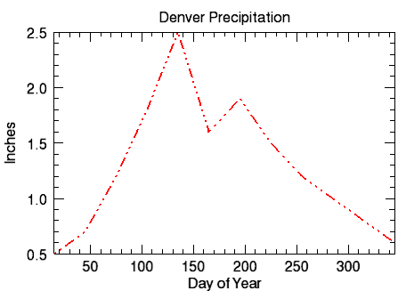
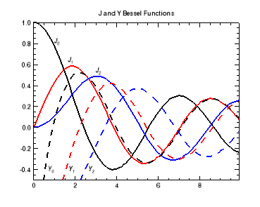

You can create plot graphics using the PLOT function. In this topic, we will use the PLOT function using two variables to display a two-dimensional plot.
The example below shows a visualization of precipitation and temperature data for Denver, Colorado.
|  |
|
The code shown below creates the graphic shown above. You can copy the entire block and paste it into the IDL command line to run it. The keywords used are explained in detail after the example code.
; Define the data.
PRECIP=[0.5,0.7,1.2,1.8,2.5,1.6,1.9,1.5,1.2,1.0,0.8,0.6]
TEMP=[30, 34, 38, 47, 57, 67, 73, 71, 63, 52, 39, 33]
DAY=FINDGEN(12) * 30 + 15
; Display the first plot to display the precipitation data.
p1 = plot(DAY, PRECIP, 'r-:2', $
TITLE = 'Denver Precipitation', $
YTITLE = 'Inches', XTITLE= 'Day of Year')
; Display the second plot to display the temperature data.
p2 = plot(DAY, TEMP, 'bS:3', /YNOZERO, $
TITLE = 'Denver Temperature', $
XTITLE = 'Day of Year', $
YTITLE = 'Degrees Fahrenheit')
| • | r-:2 - this shorthand formatting defines some of the properties that define the appearance of the graphic. In the definition for the first plot (p1), |
| • | r defines the color red |
| • | -; defines the linestyle |
| • | 2 defines the line thickness |
| • | bS:3 - this shorthand notation defines some of the properties that define the appearance of the graphic. In the definition for the first plot (p2), |
| • | b defines the color blue |
| • | -: defines the linestyle |
| • | 3 defines the line thickness |
| • | [X,Y,Z]TITLE - defines the title for the axis. |
| • | TITLE - defines the title for the window. |
This example uses data created by Bessel functions, along with the TEXT function for annotations.

The code shown below creates the graphic shown above. You can copy the entire block and paste it into the IDL command line to run it. The keywords used are explained in detail after the example code.
; Define the data.
X = FINDGEN(100)/10
; Plot J and Y Bessel Functions:
pj0 = PLOT(X, BESELJ(X, 0), '2', $
TITLE='J and Y Bessel Functions', YRANGE=[-0.5,1])
pj1 = PLOT(X, BESELJ(X, 1), 'r2', /OVERPLOT)
pj2 = PLOT(X, BESELJ(X, 2), 'b2', /OVERPLOT)
py0 = PLOT(X, BESELY(X, 0), '--2', /OVERPLOT)
py1 = PLOT(X, BESELY(X, 1), 'r--2', /OVERPLOT)
py2 = PLOT(X, BESELY(X, 2), 'b--2', /OVERPLOT)
; Define the x and y coordinates.
xcoords = [1, 1.66, 3, .7, 1.7, 2.65]
ycoords = [.8, .62,.52, -.42, -.42, -.42]
; Annotate the plot.
labels = '$\it' + ['J_0','J_1','J_2','Y_0','Y_1','Y_2'] + '$'
t = TEXT(xcoords, ycoords, labels, /DATA)
| • | Change Graphics Properties |
| • | Multiple Graphics in One Window |
| • | Saving GraphicsBar PlotsBARPLOT |
| • | PLOT |
| • | Graphics |
| • | Formatting IDL Graphics Symbols and Lines |